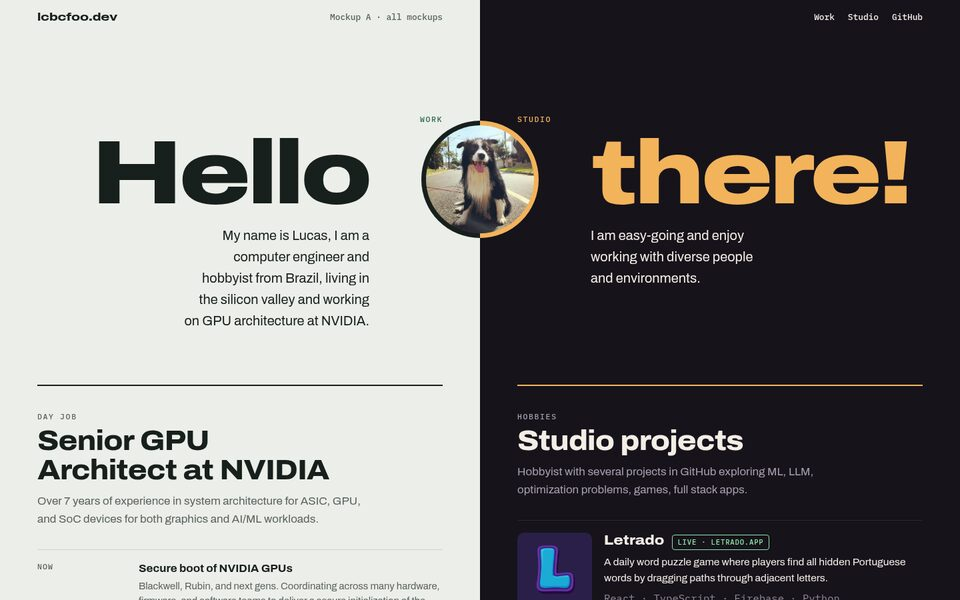

Mockup A
Two Lanes
The page is cut down the middle. Work lives on the light left side, the studio on the dark right side, and "Hello | there!" crosses the seam with your avatar on it.
- Work reads like a spec sheet, plus a power-up → SW strip
- Studio is a compact project list with thumbnails
- Stacks into light then dark on phones